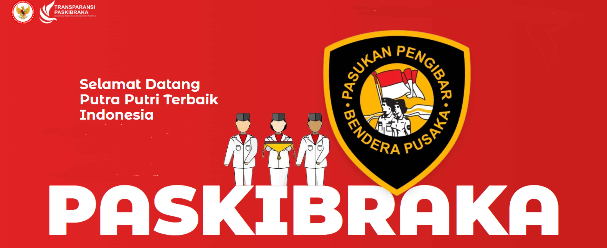

|
 |
||

Tentang PASKIBRAKAApa Itu PASKIBRAKA ?Berdasarkan Peraturan Presiden Nomor 51 tahun 2022 tentang Program Paskibraka, pembentukan Paskibraka tidak disiapkan sebatas untuk menaikkan dan menurunkan bendera pusaka pada peringatan Hari Ulang Tahun Kemerdekaan Republik Indonesia, tetapi menjadi suatu program pengkaderan calon pemimpin bangsa yang berkarakter Pancasila. Sistem pembinaan dalam pemusatan pendidikan dan pelatihan terdiri dari pembelajaran aktif ideologi Pancasila dan pemantapan nilai wawasan kebangsaan, pelatihan yang terdiri dari pelatihan kepemimpinan dan pelatihan baris-berbaris, serta pengasuhan untuk membentuk generasi yang tangguh, mandiri, dan berkarakter Pancasila. Dengan pola pembinaan di atas diharapkan dapat meningkatkan pengetahuan dan pemahaman mengenai kebangsaan. Dengan demikian, para Paskibraka siap menjadi calon pemimpin bangsa masa depan yang memiliki jiwa nasionalisme dan berjiwa Pancasila. 
Sejarah PASKIBRAKA ?Husein Mutahar, pendiri Paskibraka... (isi disesuaikan seperti aslinya) Husein Mutahar, pendiri Paskibraka Gagasan Paskibraka lahir pada tahun 1946, pada saat ibu kota Indonesia dipindahkan ke Yogyakarta. Memperingati HUT Proklamasi Kemerdekaan RI yang ke-1, Presiden Soekarno memerintahkan salah satu ajudannya, Mayor (Laut) Husein Mutahar, untuk menyiapkan pengibaran bendera pusaka di halaman Istana Gedung Agung Yogyakarta. Pada saat itulah, di benak Mutahar terlintas suatu gagasan bahwa sebaiknya pengibaran bendera pusaka dilakukan oleh para pemuda dari seluruh penjuru Tanah Air, karena mereka adalah generasi penerus perjuangan bangsa yang bertugas. Tetapi, karena gagasan itu tidak mungkin terlaksana, maka Mutahar hanya bisa menghadirkan lima orang pemuda (3 putra dan 2 putri) yang berasal dari berbagai daerah dan kebetulan sedang berada di Yogyakarta, salah satunya Siti Dewi Sutan Assin. Lima orang tersebut melambangkan Pancasila. Sejak itu, sampai tahun 1949, pengibaran bendera di Yogyakarta tetap dilaksanakan dengan cara yang sama. Ketika Ibu kota dikembalikan ke Jakarta pada tahun 1950, Mutahar tidak lagi menangani pengibaran bendera pusaka. Pengibaran bendera pusaka pada setiap 17 Agustus di Istana Merdeka dilaksanakan oleh Rumah Tangga Kepresidenan sampai tahun 1966. Selama periode itu, para pengibar bendera diambil dari para pelajar dan mahasiswa yang ada di Jakarta
Pada tahun 1967, Husein Mutahar dipanggil Presiden Soeharto untuk menangani lagi masalah pengibaran bendera pusaka. Dengan ide dasar dari pelaksanaan tahun 1946 di Yogyakarta, dia kemudian mengembangkan lagi formasi pengibaran menjadi 3 kelompok yang dinamai sesuai jumlah anggotanya, yaitu: Pasukan 17 / pengiring (pemandu). Pasukan 8 / pembawa bendera (inti). Pasukan 45 / pengawal. Jumlah tersebut merupakan simbol dari tanggal Proklamasi Kemerdekaan RI, 17 Agustus 1945 (17-8-45). Pada waktu itu dengan situasi kondisi yang ada, Mutahar hanya melibatkan putra daerah yang ada di Jakarta dan menjadi anggota Pandu/Pramuka untuk melaksanakan tugas pengibaran bendera pusaka. Rencana semula, untuk kelompok 45 (pengawal) akan terdiri dari para mahasiswa AKABRI (Generasi Muda ABRI) namun tidak dapat dilaksanakan. Usul lain menggunakan anggota pasukan khusus ABRI (seperti RPKAD, PGT, KKO, dan Brimob) juga tidak mudah. Akhirnya diambil dari Pasukan Pengawal Presiden (PASWALPRES) yang mudah dihubungi karena mereka bertugas di lingkungan Istana Kepresidenan Jakarta. Mulai tanggal 17 Agustus 1968, petugas pengibar bendera pusaka adalah para pemuda utusan provinsi. Tetapi karena belum seluruh provinsi mengirimkan utusan sehingga masih harus ditambah oleh eks-anggota pasukan tahun 1967. Pada tanggal 5 Agustus 1969, di Istana Negara Jakarta berlangsung upacara penyerahan duplikat Bendera Pusaka Merah Putih dan reproduksi Naskah Proklamasi oleh Suharto kepada Gubernur/ Kepala Daerah Tingkat I seluruh Indonesia. Bendera duplikat (yang terdiri dari 6 carik kain) mulai dikibarkan menggantikan Bendera Pusaka pada peringatan Hari Ulang Tahun Proklamasi Kemerdekaan RI tanggal 17 Agustus 1969 di Istana Merdeka Jakarta, sedangkan Bendera Pusaka bertugas mengantar dan menjemput bendera duplikat yang dikibar/diturunkan. Mulai tahun 1969 itu, anggota pengibar bendera pusaka adalah para remaja siswa SLTA se-tanah air Indonesia yang merupakan utusan dari seluruh provinsi di Indonesia, dan tiap provinsi diwakili oleh sepasang remaja putra dan putri. Istilah yang digunakan dari tahun 1967 sampai tahun 1972 masih Pasukan Pengerek Bendera Pusaka. Baru pada tahun 1973, Idik Sulaeman melontarkan suatu nama untuk Pengibar Bendera Pusaka dengan sebutan Paskibraka. PAS berasal dari PASukan, KIB berasal dari KIBar mengandung pengertian pengibar, RA berarti bendeRA dan KA berarti PusaKA. Mulai saat itu, anggota pengibar bendera pusaka disebut Paskibraka. |
||